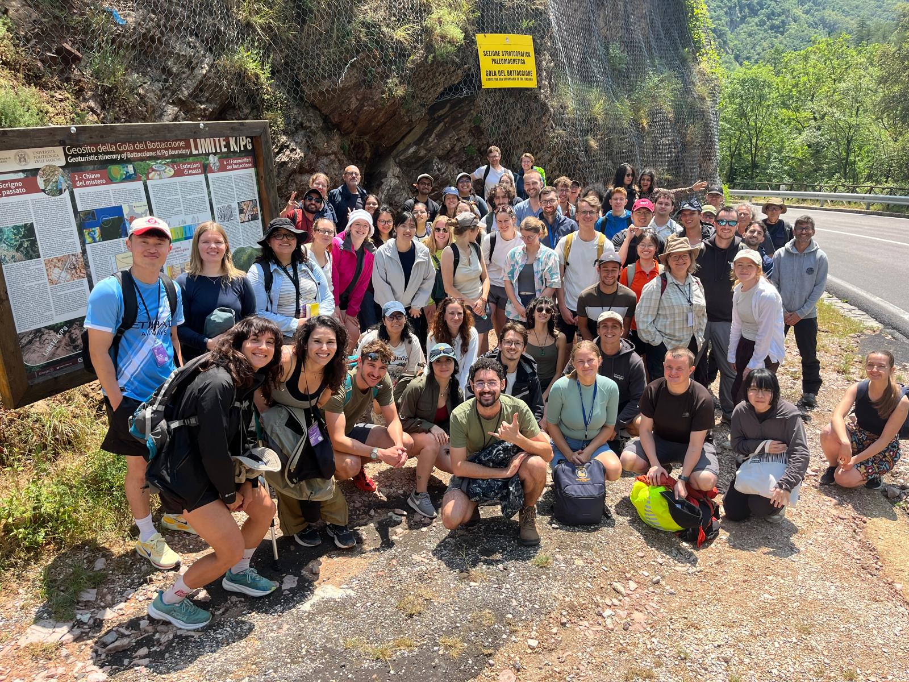

Qingqing Jiang 蒋青青

About Me
I am Qingqing Jiang, a PhD student at University of Münster. My primary research interests include geology, paleoclimatology, and astronomical chronology, with a focus on the orbital forcing on the early Eocene climate-carbon cycle. My master project most focused on the Paleocene-Eocene Thermal Maximum (PETM). And the method I used is most time series analysis to build the astronomical time scale, and finding the mechanisms of PETM. My PhD prokect is most about exploring Earth system models to understand the orbital forcing on climate systems.
Education
-
2025.09- University of Münster
PhD student
Supervisor: Professor David De Vleeschouwer -
2022-2025 Peking University
M.S., Geology
Supervisor: Professor Mingsong Li -
2018-2022 China University of Geosciences (Beijing)
B.E., Resource Exploration Engineering
Research
My research focuses on the early Eocene climate, investigating its climatic and sedimentological impacts using XRF analysis and astronomical chronology. And also orbital forcing on the early Eocene climate-carbon cycles.
- Sedimentation rates and orbital forcing during the PETM.
- Earth system modeling using cGENIE to simulate climate impacts.
Publications
- Qingqing Jiang, Mingsong Li, Weiqi Yao, Ren Wei, Kaixuan Ji, Haotian Zhang, Zhijun Jin. 2025. Astrochronology of the Paleocene-Eocene Thermal Maximum on the East Tasman Plateau. Global and Planetary Change. https://doi.org/10.1016/j.gloplacha.2025.104882
- Yilin Liu, Brandon B Bell, Elizabeth M Griffith, Mingsong Li, Yi Ge Zhang, Qingqing Jiang, Weiqi Yao. 2026. Decoupling of biological pump strength and efficiency in the eastern equatorial Pacific during the Middle Miocene Climate Optimum. Earth and planetary Science Letters. https://doi.org/10.1016/j.epsl.2026.120256
Conferences
- Qingqing Jiang, Mingsong Li, Nina M Papadomanolaki, David De Vleeschouwer. Turning the North Pacific Over: Earth System Model Experiments Reveal Precession-Driven Deep-Water Formation in the Early Eocene, EGU General Assembly 2026, Vienna, Austria, 3–8 May 2026, EGU26-3324, https://doi.org/10.5194/egusphere-egu26-3324, 2026.
- Mingsong Li, Qingqing Jiang, Yujing Wu. A modern-like rate of climate change observed in the latest Paleocene, EGU General Assembly 2026, Vienna, Austria, 3–8 May 2026, EGU26-6048, https://doi.org/10.5194/egusphere-egu26-6048, 2026.
Trainings
- Urbino Summer School in paleoclimatology, USSP 2026

Hobbies
I am passionate about dragon boating, fitness, travel, and reading.


Contact
Feel free to reach out to me at:
- Email: qingqing.jiang@uni-muenster.de / jiang_qingqing@outlook.com
- ResearchGate: Qingqing Jiang
- Linkedin: Qingqing Jiang
- Address: Room 520, Corrensstr. 24, 48149 Münster, Germany